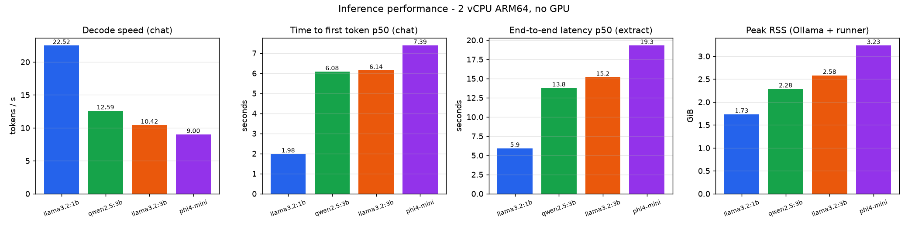
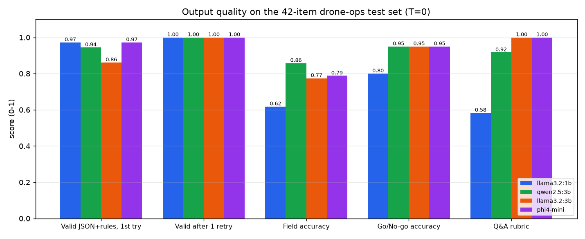
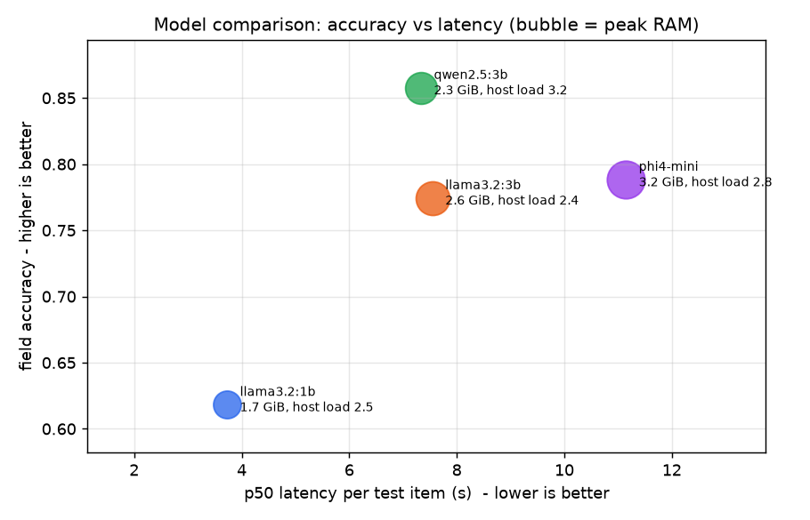
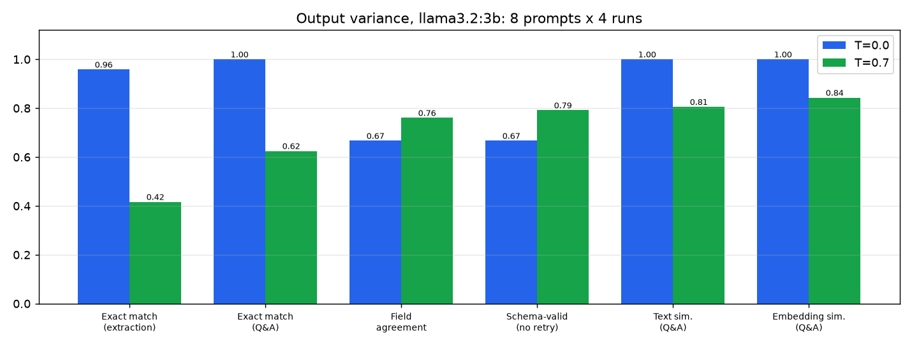
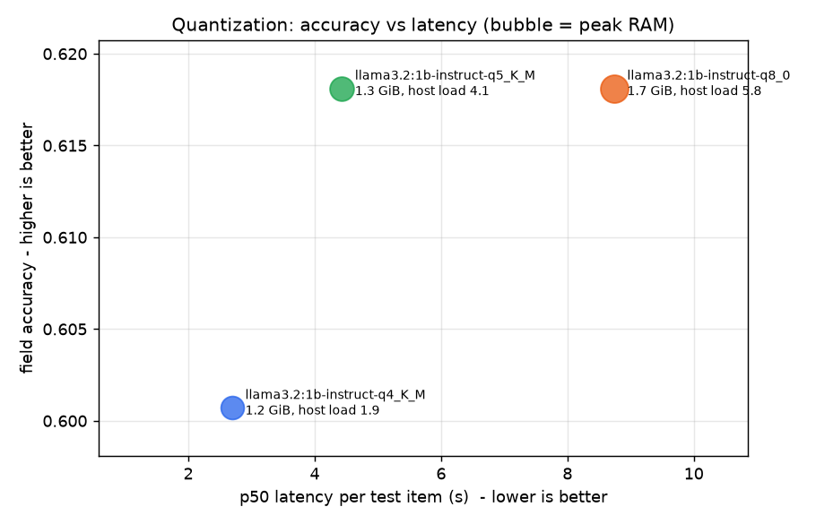

FieldMate: an offline drone-ops assistant on small language models
FieldMate turns a drone pilot's messy field notes into validated JSON (pre-flight go/no-go checks, maintenance defect reports) and answers questions about a fleet log. It runs entirely offline on small language models (1B to 4B parameters) served by Ollama: no API key, no network, no data leaving the laptop or ground-station box.
The repo is also a benchmark study. Every number
below was measured on a 2-vCPU ARM64 machine with no GPU, using the
harness in src/fieldmate/bench/. Nothing is estimated.
Built by Rakesh Burla (B.Tech Mechanical, RGUKT Basar), who works on drones/UAVs. Project 2 of an AI-engineering portfolio: local inference, structured output, model selection.
Why offline?
Drone field teams work where connectivity is bad: agricultural survey sites, disaster zones, ranges and campuses with patchy mobile data. Flight logs can be sensitive (locations, client sites, defence/aerospace work), so sending them to a cloud LLM may not be allowed. At the end of a day of flying, a crew has 30 to 100 scribbled notes like:
pre-flt Q4-ALPHA. prop #3 has a nick on leading edge. batt 88. gps fine. didnt check compass.FieldMate turns that into a record the maintenance system can trust:
{"aircraft_id": "Q4-ALPHA", "battery_pct": 88, "propellers": "issue", "motors": "ok",
"gps": "ok", "compass": "not_checked", "weather_ok": true, "decision": "no_go",
"issues": ["nick on leading edge of prop #3"]}The model's output is constrained by a JSON schema and validated
against the ops manual (for example: any propeller issue forces
no_go; a high or critical defect
must ground the aircraft). Output that breaks a rule is sent back to the
model once, with the error, before the call fails gracefully.
Architecture
flowchart LR
subgraph Client
CLI["fieldmate CLI (Typer)"]
HTTP["HTTP client / ground-station UI"]
end
subgraph App["FieldMate (Python 3.12)"]
API["FastAPI\n/health /chat /chat/stream /extract"]
EX["Extractor\nschema → validate → retry once → graceful fail"]
SC["Pydantic v2 schemas\n+ ops-manual rules"]
OC["OllamaClient (httpx)\ntiming metrics, TTFT"]
BE["Bench harness\nperf · quality · temperature · quant"]
end
subgraph Local["Local inference (offline)"]
OL["Ollama server"]
LS["llama.cpp runner\nGGUF Q4_K_M / Q5_K_M / Q8_0"]
end
CLI --> API
CLI --> EX
HTTP --> API
API --> EX --> SC
EX --> OC
API --> OC
BE --> EX
BE --> OC
OC -- "REST /api/chat\nformat = JSON schema" --> OL --> LS
Extraction flow:
sequenceDiagram
participant U as Caller
participant E as Extractor
participant O as Ollama
participant P as Pydantic
U->>E: extract(kind, note)
E->>O: chat(messages, format=JSON schema, T=0)
O-->>E: JSON (grammar-constrained)
E->>P: model_validate(json)
alt valid
P-->>U: ok=true, data
else schema/rule violation
E->>O: retry: previous output + "failed validation: <errors>"
O-->>E: corrected JSON
E->>P: model_validate(json)
P-->>U: ok=true, or ok=false with errors (no exception)
end
Results (measured, 2-vCPU ARM64, no GPU)
All tables are generated by scripts/make_tables.py from
the raw files in results/; the full set, including
per-field accuracy, is in docs/RESULTS_TABLES.md
and the analysis in docs/REPORT.md. The host was
shared with other jobs, so each table shows the 1-minute load average
next to the numbers.
Speed (5 warm runs per prompt type, 128-token cap, T=0)
| Model | Decode tok/s | TTFT chat p50 (s) | TTFT extraction mean (s) | Extraction latency p50 / p95 (s) | Cold load (s) | Peak RSS (GiB) |
|---|---|---|---|---|---|---|
llama3.2:1b (Q8_0) |
22.5 | 1.98 | 3.1 | 5.9 / 6.1 | 16.8 | 1.73 |
qwen2.5:3b (Q4_K_M) |
12.6 | 6.08 | 9.8 | 13.8 / 15.0 | 33.1 | 2.28 |
llama3.2:3b (Q4_K_M) |
10.4 | 6.14 | 13.1 | 15.2 / 41.5 | 37.4 | 2.58 |
phi4-mini 3.8B (Q4_K_M) |
9.0 | 7.39 | 12.6 | 19.3 / 21.4 | 49.5 | 3.23 |

Quality on the 42-item test set (T=0, schema-constrained, 1 retry)
| Model | Valid 1st try | Valid after retry | Field accuracy | Go/No-go | Defect severity | Q&A rubric | p50 s/item |
|---|---|---|---|---|---|---|---|
llama3.2:1b |
97.2% | 100% | 61.8% | 80.0% | 18.8% | 58.3% | 3.7 |
qwen2.5:3b |
94.4% | 100% | 85.8% | 95.0% | 62.5% | 91.7% | 7.3 |
llama3.2:3b |
86.1% | 100% | 77.4% | 95.0% | 62.5% | 100% | 7.5 |
phi4-mini |
97.2% | 100% | 78.8% | 95.0% | 68.8% | 100% | 11.1 |


Every model produced 100% schema-valid output after at most
one retry (36 extraction items each, 144 extractions in total).
Validity is not the hard part; getting the fields right is.
qwen2.5:3b is the best extractor (85.8% field accuracy, +24
points over the 1B model) at half the latency of phi4-mini.
llama3.2:3b and phi4-mini answer fleet-log
questions perfectly but mis-copy aircraft ids on defect notes
(62.5%).
Temperature:
same 8 prompts x 4 runs (llama3.2:3b, no retry)
| Metric | T=0 | T=0.7 |
|---|---|---|
| Identical outputs, extraction | 95.8% | 41.7% |
| Identical outputs, Q&A | 100% | 62.5% |
| Field-accuracy std-dev across runs | 0.000 | 0.151 |
| Pairwise text similarity, Q&A | 1.000 | 0.805 |
| Embedding similarity, Q&A (all-minilm) | 1.000 | 0.843 |
| Schema-valid without retry | 66.7% | 79.2% |

At T=0 the model gave the same answer almost every time (31 of 32 runs matched the most common output; the one exception, on one note, is most likely llama.cpp prompt-cache/batching non-determinism), and its mistakes were just as repeatable: two of the six notes failed validation on all four runs. At T=0.7 only 42% of extraction runs matched and field accuracy swung by 0.15 (std-dev) from run to run. T=0.7 scored slightly higher here (79% vs 67% valid without retry) because sampling sometimes escaped the repeatable mistakes, but on 6 notes that is noise, and the retry loop fixes those cases at T=0 (100% valid). Extraction stays at T=0 for reproducible records.
Constrained
vs unconstrained decoding (llama3.2:1b, all 42 items)
| Decoding | Valid 1st try | Valid after retry | Field accuracy | Go/No-go | p50 s/item |
|---|---|---|---|---|---|
JSON schema as format (grammar) |
97.2% | 100% | 61.8% | 80.0% | 3.7 |
format="json", schema only in the prompt |
47.2% | 69.4% | 51.0% | 60.0% | 7.8 |
Without the grammar, 53% of extractions needed the retry and 31%
still failed (wrong enum values such as component,
issues as a string, ops-rule violations), and the retries
doubled the median latency. One twist: on the 25 outputs that
were valid, the unconstrained model got 73.5% of fields right
and read the battery level correctly 15 times out of 15, while the
constrained model returned null battery on 20 of 20
pre-flight notes. The grammar guarantees shape, but it also makes "null"
the easiest path for a tiny model (see the report).
Quantization
(llama3.2:1b, same 42 items)
| Build | File size | Peak RSS (GiB) | Decode tok/s (host load) | Field accuracy | Go/No-go | Q&A rubric (6 items) |
|---|---|---|---|---|---|---|
| Q4_K_M | 770 MiB | 1.19 | 30.1 (2.1) | 60.1% | 80.0% | 25.0% |
| Q5_K_M | 869 MiB | 1.29 | 13.9 (4.4) | 61.8% | 75.0% | 33.3% |
| Q8_0 | 1,259 MiB | 1.72 | 22.5 (0.3) / 14.4 (5.9) | 61.8% | 80.0% | 58.3% |
Q4_K_M uses 31% less RAM than Q8_0 and lost 1.7 points of field accuracy; Q5_K_M lost nothing on extraction. The free-text Q&A answers degraded much more (58% to 25% of rubric facts), though on only 6 questions. Speed numbers are confounded by the shared host (the load average is in brackets): Q4_K_M at load 2.1 still decoded 34% faster than Q8_0 at load 0.3. Re-running Q8_0 reproduced all 36 extraction outputs of the main study exactly, so T=0 accuracy is reproducible.

Which model should a field team run?
- Default:
qwen2.5:3b(now the FieldMate default). Best field accuracy (85.8%), 95% go/no-go, 2.3 GiB RAM, about 7 s per note on 2 CPU cores. - Q&A-heavy use:
phi4-miniorllama3.2:3b: 100% on the fleet-log questions, but more RAM (3.2 / 2.6 GiB) and weaker on aircraft ids in defect notes. llama3.2:1bonly on boards with under 2 GiB free, and only with a human reviewing every no-go decision: it gets one go/no-go call in five wrong.mistral:7bwas not benchmarked. Its 4.1 GB of weights plus KV cache did not fit next to the other workloads on the 7.8 GiB, swap-less box; this is recorded as an exclusion, not a result.
Features
| Offline inference | Ollama + GGUF small language models, CPU only. httpx client with
trust_env=False, so local traffic never goes through a
proxy. |
| Structured extraction | PreflightReport and DefectReport Pydantic
v2 schemas. The JSON schema is passed as Ollama format, so
decoding is grammar-constrained. |
| Ops-manual validation | Rules no grammar can express, written as
model_validators: no-go on any issue, battery below 30% or
bad weather; high/critical defects ground the aircraft. |
| Retry with error feedback | On a parse or validation error the model sees its own output plus
the exact Pydantic errors, and gets one retry. After
that ok=false is returned: no exception, no crash. |
| Grounded Q&A | /chat answers from a fleet log you pass in, and says
"not in the log" otherwise. |
| Streaming | /chat/stream (NDJSON) and the CLI print tokens as they
arrive. Client-side TTFT is measured. |
| Benchmark suite | Perf (TTFT, tok/s, p50/p95 latency, peak RSS), quality (validity, field accuracy, rubric), temperature variance, a constrained-decoding ablation and a quantization study. Runs are resumable and wait for free RAM. |
| Ops-ready | Typer CLI, FastAPI with OpenAPI docs, Dockerfile, docker-compose (app + ollama + model-init), Makefile, ruff, a pytest suite that runs offline. |
Quickstart
# 1. Ollama + a model (once, needs internet; fully offline afterwards)
curl -fsSL https://ollama.com/install.sh | sh
ollama serve & # or the desktop app
ollama pull qwen2.5:3b
# 2. FieldMate
python -m venv .venv && source .venv/bin/activate
make dev # pinned deps + editable install
fieldmate health
# 3. Use it
fieldmate extract preflight "uav-07 batt 92%, props ok, gps 14 sats, compass ok, motors ok, wind 8 km/h"
fieldmate extract defect "AERO-2 battery pack B3 puffed up a bit after charge, smells weird"
fieldmate chat "Which aircraft are grounded?" --context examples/fleet_log.txt --stats
# 4. API
fieldmate serve # http://127.0.0.1:8000/docs
curl -s localhost:8000/extract -H 'content-type: application/json' \
-d '{"kind":"defect","text":"UAV-03 hairline crack at base of rear right arm"}'
curl -N localhost:8000/chat/stream -H 'content-type: application/json' \
-d '{"message":"How should a swollen LiPo be handled?"}'Docker (app + Ollama + one-shot model pull):
docker compose up -d --build # FIELDMATE_MODEL=qwen2.5:3b by default
curl localhost:8000/healthConfiguration (environment variables): OLLAMA_HOST
(default http://127.0.0.1:11434),
FIELDMATE_MODEL (default qwen2.5:3b),
FIELDMATE_TEMPERATURE (0), FIELDMATE_NUM_CTX
(2048), FIELDMATE_MAX_RETRIES (1),
FIELDMATE_TIMEOUT_S (300), FIELDMATE_USE_MMAP
(0).
API
| Method | Path | Body | Returns |
|---|---|---|---|
| GET | /health |
Ollama version, local models, whether the default model is present (503 if Ollama is down) | |
| POST | /chat |
{message, context?, model?, temperature?} |
{answer, model, metrics} |
| POST | /chat/stream |
same | NDJSON: {"delta": ...} lines, then
{"done": true, "metrics": {...}} |
| POST | /extract |
{kind: preflight|defect, text, model?, temperature?} |
ExtractionResult: ok, data,
every attempt with its raw output, error and timings |
/extract returns 200 with
ok=false when the model cannot produce valid
output after the retry (the caller decides what to do next, such as
sending the note to a human), and 502 only when Ollama
itself is unreachable.
Reproduce the benchmarks
make pull # models used below + all-minilm for embeddings
make bench # or: scripts/run_benchmarks.sh (RAM-gated, resumable)
python scripts/make_tables.py > docs/RESULTS_TABLES.md
fieldmate bench chartsRepository layout
src/fieldmate/
client.py Ollama REST client: chat, stream (TTFT), embed, unload; timing metrics
schemas.py Pydantic v2 contracts + ops-manual validators
prompts.py system prompts, field specs, repair prompt
extractor.py constrained generation -> validate -> 1 retry -> graceful failure
api.py / cli.py FastAPI service and Typer CLI
bench/ perf.py, quality.py, temperature.py, scoring.py, charts.py, common.py
data/testset.jsonl 42 hand-labelled items (20 pre-flight, 16 defect, 6 fleet-log Q&A)
results/ raw per-run JSONL + summaries (committed, so every number can be audited)
docs/REPORT.md technical report; docs/charts/*.png
scripts/ run_benchmarks.sh, wait_for_memory.py, make_tables.py
tests/ 36 offline tests (httpx.MockTransport fake Ollama)Design decisions
- Grammar-constrained decoding first, validation
second. Ollama's
formataccepts a JSON schema and turns it into a llama.cpp grammar, so the model cannot emit a missing brace or an unknown enum value. Pydantic then checks what no grammar can express (the ops-manual rules). The ablation below measures what the schema constraint is worth on its own. - One retry, then fail gracefully. A second retry
rarely helps a small model and doubles the worst-case latency on a CPU
box.
ok=falseplus the raw attempts lets the caller route the note to a human instead of crashing a batch job. - T=0 and a fixed seed for extraction. Field records have to be reproducible; the temperature study shows what T=0.7 costs.
num_ctx=2048, one loaded model, one slot. On a 7.8 GiB box without swap, KV-cache RAM matters more than long context. Every prompt in the test set fits in 2048 tokens.- No example values in prompts. Tiny models copy them (see "What went wrong").
- httpx with
trust_env=False. Local inference traffic never touches a proxy. - Everything resumable and RAM-gated. Results are appended row by row; a model only loads when three readings in a row show enough free RAM. On a shared edge box this is what made the study finish at all.
- Committed raw results.
results/*.jsonlholds every model output, so every table can be audited and regenerated withscripts/make_tables.py.
What went wrong, and the fixes
- The runner was OOM-killed on a shared 7.8 GiB box.
Ollama on CPU turns mmap off and copies the weights into
process memory, and llama.cpp's ARM weight repacking makes another
resident copy.
llama3.2:1b(Q8_0, 1.3 GB on disk) reached 1.7 GB anonymous RSS, and the kernel log showsOut of memory: Killed process ... (llama-server). Other jobs on the box held up to 5 GiB of RAM-backed/tmp, so free memory moved between 0.1 and 2.9 GiB from minute to minute. Fixes: (a)scripts/wait_for_memory.pyonly loads a model after three readings in a row, 10 s apart, show enough free RAM for it (one good reading was not enough: a load passed the gate at 2.9 GiB and was still killed); (b) a circuit breaker stops a model's run after two Ollama errors in a row instead of writing 42 rows of failures; (c) every result row is appended to JSONL as soon as it exists, so a run that gets killed resumes where it stopped; (d)LLAMA_ARG_CACHE_RAM=0turns off llama-server's 8 GiB host prompt cache. - mmap is not a free lunch. I tried
use_mmap=truewith repacking off, so the weights live in reclaimable page cache. Under memory pressure the kernel kept evicting them and re-reading them over the network filesystem: about 1 token/s, and a 284-token prompt took minutes to pre-fill. The mode stays available asFIELDMATE_USE_MMAP=1for hosts that have the RAM, but it is off by default. Lesson: on an edge box, budget RAM for the whole model plus about 0.5 GiB. Do not count on paging. - The 1B model copied the example from the prompt.
The first system prompt said "Aircraft IDs are upper-case like UAV-07".
llama3.2:1bthen labelled a Q4-ALPHA note as UAV-07. I changed the example toXY-12, and the model wroteXY-12for every defect. Fix: no example values in prompts for tiny models. The instruction now says "copy the aircraft ID from the note". Both prompt versions are in git history. - Local traffic went through a proxy. The sandbox
sets
HTTP(S)_PROXY, and httpx honours it by default, so requests to127.0.0.1:11434came back empty. Fix: the client usestrust_env=False. An offline tool should never send local inference traffic through a proxy. - Identical prompts made TTFT look too good. In early runs every warm request reused the first one's KV cache (prefill showed about 1,000 tok/s). Fix: each warm run now uses a different question or note, so only the shared system prompt is cached, as in real use.
pgrep -fkilled my own shell. Housekeeping scripts that matched on the command line also matched the shell running them.scripts/now matches on exact process names. A small thing, but it cost several reruns.- The RAM gate waited for memory the previous model was
holding. With
keep_alive=30m,phi4-mini's runner (3.3 GB resident) stayed loaded after its quality run, so the gate for the next model (needs 2.7 GiB free) saw about 2.7 GiB and kept waiting, while the box sat idle. Fix:scripts/wait_for_memory.pynow asks Ollama to unload any resident model (keep_alive: 0) before it starts counting free RAM. - Nullable fields became an escape hatch. The schema
allows
battery_pctandweather_okto benull("not stated"). Under grammar-constrained decoding the models, above all the 1B one, often chosenulleven when the note said "batt 88":llama3.2:1breturnednullbattery on 20 of 20 pre-flight notes. This was found by the per-field table, not by the headline validity number (100% valid after retry). It is reported as measured, not fixed after the fact; see future work.
Future work
- Fine-tune (LoRA) a 1B model on synthetic pilot notes so the smallest model closes the accuracy gap with the 3B models; distil from a larger model's outputs.
- Run the same harness on real edge hardware (Raspberry Pi 5, Jetson Orin Nano) and with GPU offload, without other jobs sharing the CPU.
- Add
mistral:7band other 7-8B models on a machine with more than 8 GiB of RAM (excluded here: 4.1 GB of weights plus KV cache did not fit next to the other workloads on the box). - Grow the test set past 42 items, add inter-annotator labels, and report confidence intervals.
- Speculative decoding (1B draft for a 3B target) to cut latency on CPU.
- A small offline UI for the ground station and a sync queue for when connectivity returns.
License
MIT, see LICENSE.